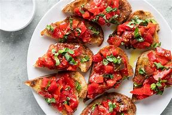
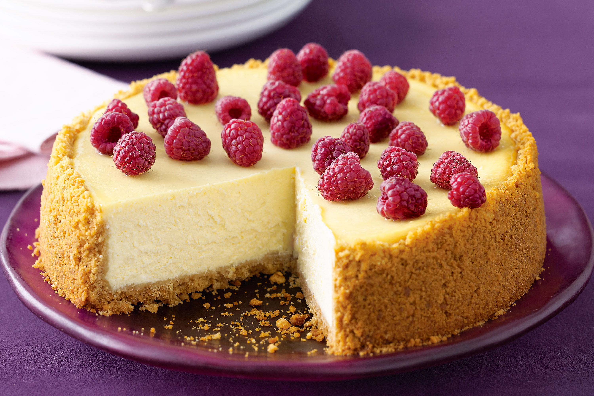
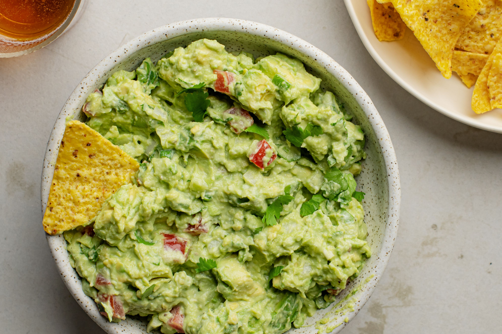
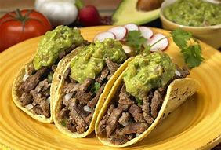
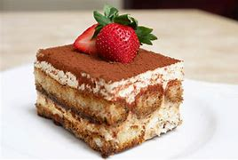

Brownie denso y chocolatoso, perfecto para los amantes del chocolate.
Ingredientes:
200g de chocolate negro
150g de mantequilla
200g de azúcar
3 huevos
100g de harina
Una pizca de sal
Instrucciones:
1. Derrite el chocolate con la mantequilla.
2. Mezcla el azúcar y los huevos.
3. Añade la mezcla de chocolate y mantequilla.
4. Incorpora la harina y la sal.
5. Hornea a 180°C durante 25 minutos.

Bruschetta
Rebanadas de pan tostado con tomate, albahaca y ajo.
Ingredientes:
Pan de baguette
Tomates maduros
Albahaca fresca
Ajo
Aceite de oliva
Sal y pimienta
Instrucciones:
1. Tuesta el pan.
2. Frota con ajo.
3. Mezcla tomates picados con albahaca y aceite de oliva.
4. Añade sobre el pan y sazona.

Cheesecake de Fresa
Cheesecake suave con una base de galleta y cobertura de fresa.
Ingredientes:
200g de galletas
100g de mantequilla
500g de queso crema
200g de azúcar
3 huevos
200g de fresas
150g de mermelada de fresa
Instrucciones:
1. Tritura las galletas y mezcla con mantequilla derretida.
2. Presiona la mezcla en el fondo de un molde.
3. Mezcla el queso crema con azúcar y huevos.
4. Vierte sobre la base y hornea a 160°C durante 50 minutos.
5. Deja enfriar y cubre con mermelada de fresa y fresas.

Guacamole
Guacamole fresco con aguacate, tomate y cilantro.
Ingredientes:
2 aguacates maduros
1 tomate
Cilantro fresco
1 cebolla pequeña
Jugo de 1 limón
Sal y pimienta
Instrucciones:
1. Machaca los aguacates.
2. Mezcla con tomate picado, cebolla y cilantro.
3. Añade jugo de limón, sal y pimienta al gusto.
Paella Valenciana
Paella tradicional con mariscos, pollo y verduras.
Ingredientes:
300g de arroz
200g de pollo
200g de mariscos variados
1 pimiento rojo
1 pimiento verde
200g de guisantes
1 litro de caldo de pollo
Azafrán
Sal y pimienta
Instrucciones:
1. Sofríe el pollo y los mariscos.
2. Añade pimientos y guisantes.
3. Incorpora el arroz y el caldo.
4. Cocina hasta que el arroz esté tierno y el caldo se haya absorbido.
Pasta a la Carbonara
Pasta cremosa con tocino y queso parmesano.
Ingredientes:
200g de pasta
100g de tocino
2 huevos
100g de queso parmesano
2 dientes de ajo
Sal y pimienta
Instrucciones:
1. Cocina la pasta al dente.
2. Sofríe el tocino y el ajo.
3. Mezcla huevos y queso parmesano.
4. Combina con la pasta y el tocino.
5. Añade sal y pimienta al gusto.
Pizza Margherita
Pizza con salsa de tomate, mozzarella y albahaca fresca.
Ingredientes:
1 masa de pizza
200g de salsa de tomate
150g de mozzarella
Hojas de albahaca fresca
Orégano
Aceite de oliva
Instrucciones:
1. Extiende la masa y extiende la salsa de tomate.
2. Añade la mozzarella y el orégano.
3. Hornea a 220°C durante 15 minutos.
4. Decora con albahaca y un chorrito de aceite de oliva.

Tacos de Carne
Tacos rellenos de carne sazonada y acompañados de guacamole.
Ingredientes:
500g de carne de res molida
1 cebolla
2 dientes de ajo
Especias para tacos
Tortillas de maíz
Guacamole
Salsa
Instrucciones:
1. Cocina la carne con cebolla y ajo.
2. Añade las especias.
3. Rellena las tortillas con carne, guacamole y salsa.
Tarta de Manzana
Deliciosa tarta de manzana con una masa crujiente.
Ingredientes:
250g de harina
125g de mantequilla
100g de azúcar
2 manzanas
1 huevo
Canela en polvo
Instrucciones:
1. Prepara la masa mezclando harina, mantequilla y azúcar.
2. Extiende la masa en un molde.
3. Cubre con manzanas en rodajas y espolvorea con canela.
4. Hornea a 180°C durante 45 minutos.

Tiramisu
Postre italiano con capas de café y crema mascarpone.
Ingredientes:
250g de queso mascarpone
200g de bizcochos de soletilla
300ml de café expreso
3 huevos
100g de azúcar
Cacao en polvo
Instrucciones:
1. Mezcla el queso mascarpone con yemas de huevo y azúcar.
2. Bate las claras a punto de nieve y añádelo a la mezcla.
3. Empapa los bizcochos en café y coloca en capas.
4. Refrigera y espolvorea con cacao antes de servir.